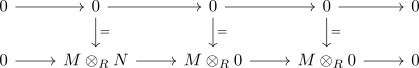
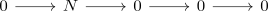

faithfully flat module and tensor functor as faithful functor
Proposition
Let \(R\) be a ring and $\mathrm{RMod}$ the category RMod. Suppose $M$ is a flat module
TFAE:
- $M$ is faithfully flat in the sense that $M \otimes N = 0 \Leftrightarrow N = 0$
- the tensoring functor $M \otimes_{R} -: \mathrm{RMod} \rightarrow \mathrm{Ab}$ is faithful
- the tensoring functor is faithfully exact functor
Proof
follows from:
1) $\implies$ 2)
using Let $f \in \mathrm{Hom}_{\mathrm{RMod}}()
2) $\implies$ 3)
3) $\implies$ 1)
Let $M \otimes_{R} N = 0$. Then consider the exact sequences

By assumption

is exact showing that $N = 0$ (cf. exactly sandwhiched by isomorphisms and zero object)
2) $\implies$ 1)
Suppose $M \otimes N = 0$ Then consider
\begin{align*}
M \otimes : \mathrm{Hom}_{\mathrm{RMod}}(N,N) \rightarrow \mathrm{Hom}_{\mathrm{Ab}}(M \otimes N-, M \otimes N) \cong \mathrm{Hom}_{\mathrm{Ab}}(M \otimes N,0 ) \cong \{0\}
\end{align*}
Then as $M \otimes $ is injective by assumption we conclude that
\begin{align*}
\vert \mathrm{Hom}_{\mathrm{RMod}}(N,N) \vert = 1
\end{align*}
Hence the identity morphism and the zero morphism are the same, showing that $N$ is the zero module.